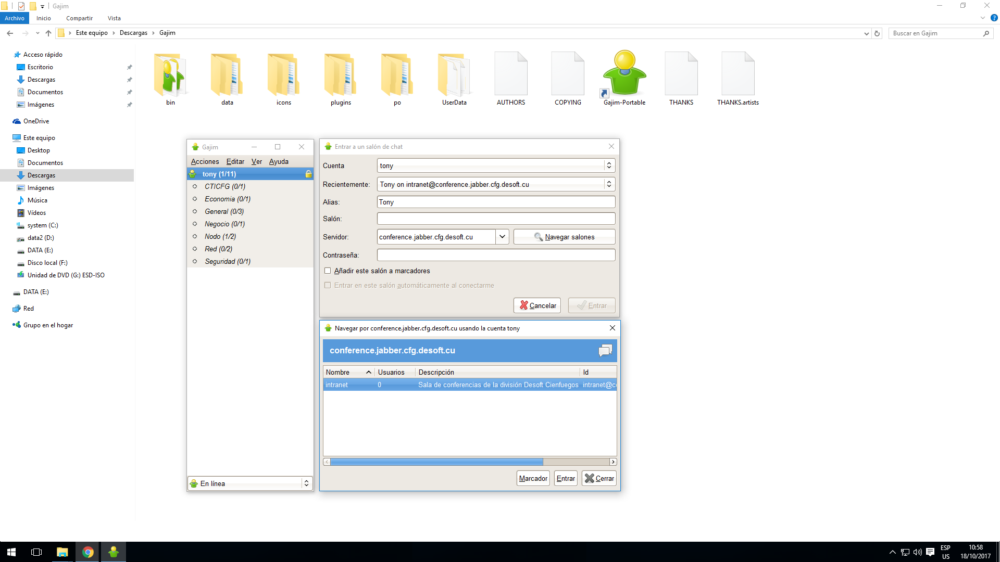
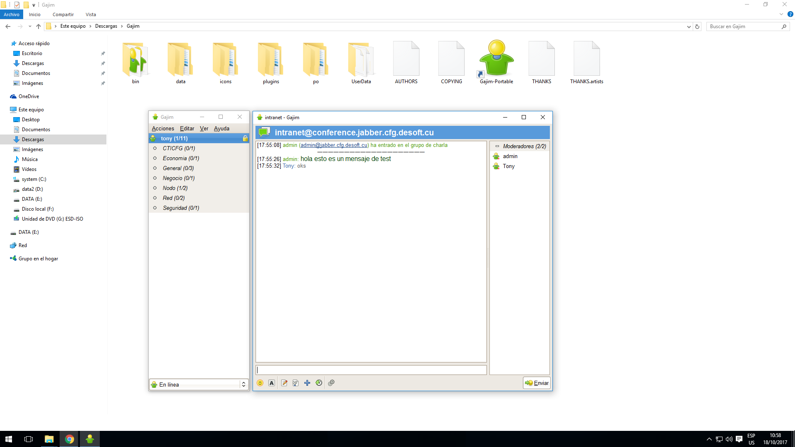
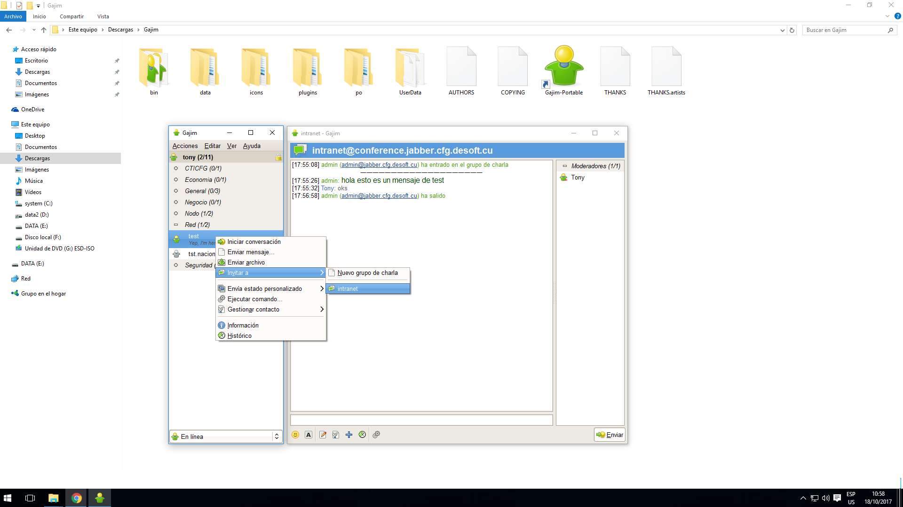

-

Este tutorial describe como unirme a una sala de chat o conferencia creada para un grupo de trabajo de la empresa labiofam a nivel nacional.
El primer paso consiste en conectarnos con nuestra cuenta al servicio de chat de la división y una vez en línea, dar clic izquierdo sobre la opción [Acciones] del menú, luego [Entrar a un grupo de charla], y finalmente dar clic izquierdo sobre [Entrar en un nuevo grupo de charla]
-

En caso de que no estemos seguros del nombre exacto de la sala de chat o si escribimos bien la dirección del servidor, podemos dar clic izquierdo sobre el botón [Navegar salones] para listar todas las salas de chat disponibles en el servidor especificado. Si no hay problemas se debe mostrar una ventana flotante como la que se muestra en pantalla donde se listan las distintas salas de charla activas.
Seleccionamos del listado la que nos interesa que en este caso sería [intranet] y le damos entrar.
-

En la ventana flotante denominada [Entrar a un salon de chat] se nos solicita la información de a qué grupo de charla deseamos conectarnos.
Los tres campos que determinan una conexión exitosa son:
1- [Servidor]: Debemos especificar sin errores el nombre del servidor que publica la sala de charla, en este caso debe ser el servidor de la división [conference.jabber.cfg.labiofam.cu]
2- [Salón]: Debemos especificar el nombre de la sala de charla o chat a la que deseamos conectarnos.
3- [Contraseña]: Debemos especificar la clave de acceso para la sala de chat, en este caso no es requerida pues es una conferencia abierta y pueden entrar personas de otras divisiones incluso, solo deben compartir la direccion de nuestro servidor y el nombre de la sala.
1- Por otra parte, el campo [Alias] determina el nombre con el que nos identifican dentro del grupo de charla, el cual se puede modificar a gusto personal pero como es una conferencia de trabajo se aconseja dejar su nombre completo.
En este ejemplo seleccionamos la sala de chat denominada [intranet] y luego damos clic izquierdo sobre el botón [Entrar]
-

Como bien podemos observar en la pantalla, nos encontramos dentro de la sala de conferencia, permitiéndonos comunicarnos con todos los integrantes. Los usuarios conectados se muestran en un listado que aparece a la derecha de la ventada, en este ejemplo existen solo 2.
-

También es posible invitar otras personas de forma explícita para evitar errores a la hora de especificar los datos de conexión a la sala de chat.
Para ello debemos buscar el usuario dentro de nuestra lista de contactos, le damos clic derecho sobre el mismo y clic izquierdo sobre la opción del menú [Invitar a], esta última nos muestra el listado de salas activas, dándole clic izquierdo sobre la deseada.
-

Una vez realizada la invitación se muestra una notificación en la sala de chat y le debe salir al usuario invitado una ventana flotante como la que se muestra en pantalla para que acepte entrar a la conferencia, de lo contrario no podría entrar.
-

Si el usuario decide aceptar entrar en la sala de chat entonces se mostraría una notificación en la sala y aparecería dentro del listado de integrantes de la conferencia.
Nótese que la categoría de este usuario es participante porque los anteriores son administradores de la sala de conferencia, esto es algo que se define a la hora de crear la sala de chat. Aunque en términos de comunicación este aspecto es irrelevante.
-

También es posible establecer comunicación privada con algunos de los integrantes, aunque estos no formen parte de nuestros contactos.
Para ello debemos buscarlo dentro del listado que aparece a la derecha de la ventana de conferencia, dar clic derecho sobre el mismo y seleccionar la opción del menú [Enviar mensaje privado]
-

Finalmente se mostraría un cuadro de dialogo donde toda la información que se escriba sería solo dirigida al usuario seleccionado.